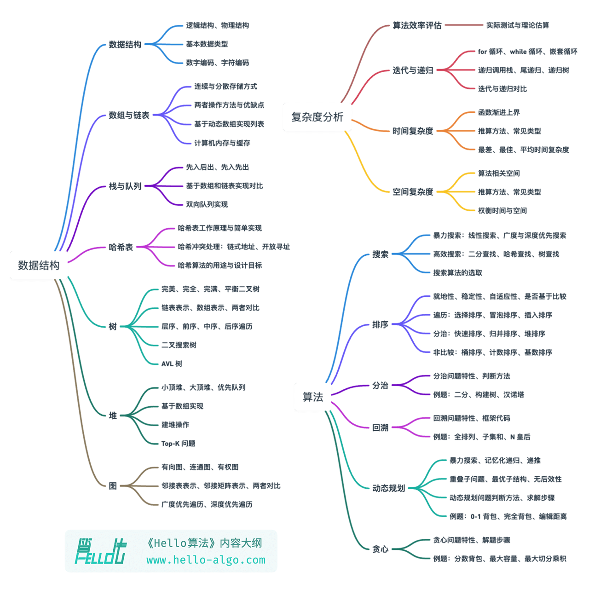

关于本书
本项目旨在创建一本开源、免费、对新手友好的数据结构与算法入门教程。
- 全书采用动画图解，结构化地讲解数据结构与算法知识，内容清晰易懂，学习曲线平滑。
- 算法源代码皆可一键运行，支持 Python、C++、Java、C#、Go、Swift、JavaScript、TypeScript、Dart、Rust、C 和 Zig 等语言。
- 鼓励读者在线上章节评论区互帮互助、共同进步，提问与评论通常可在两日内得到回复。
读者对象
若你是算法初学者，从未接触过算法，或者已经有一些刷题经验，对数据结构与算法有模糊的认识，在会与不会之间反复横跳，那么本书正是为你量身定制的！
如果你已经积累一定的刷题量，熟悉大部分题型，那么本书可助你回顾与梳理算法知识体系，仓库源代码可以当作“刷题工具库”或“算法字典”来使用。
若你是算法“大神”，我们期待收到你的宝贵建议，或者一起参与创作。
!!! success "前置条件"
你需要至少具备任一语言的编程基础，能够阅读和编写简单代码。
内容结构
本书的主要内容如下图所示。
- 复杂度分析：数据结构和算法的评价维度与方法。时间复杂度和空间复杂度的推算方法、常见类型、示例等。
- 数据结构：基本数据类型和数据结构的分类方法。数组、链表、栈、队列、哈希表、树、堆、图等数据结构的定义、优缺点、常用操作、常见类型、典型应用、实现方法等。
- 算法：搜索、排序、分治、回溯、动态规划、贪心等算法的定义、优缺点、效率、应用场景、解题步骤和示例问题等。

致谢
本书在开源社区众多贡献者的共同努力下不断完善。感谢每一位投入时间与精力的撰稿人，他们是（按照 GitHub 自动生成的顺序）：krahets、codingonion、nuomi1、Gonglja、Reanon、justin-tse、danielsss、hpstory、S-N-O-R-L-A-X、night-cruise、msk397、gvenusleo、RiverTwilight、gyt95、zhuoqinyue、Zuoxun、Xia-Sang、mingXta、FangYuan33、GN-Yu、IsChristina、xBLACKICEx、guowei-gong、Cathay-Chen、mgisr、JoseHung、qualifier1024、pengchzn、Guanngxu、longsizhuo、L-Super、what-is-me、yuan0221、lhxsm、Slone123c、WSL0809、longranger2、theNefelibatas、xiongsp、JeffersonHuang、hongyun-robot、K3v123、yuelinxin、a16su、gaofer、malone6、Wonderdch、xjr7670、DullSword、Horbin-Magician、NI-SW、reeswell、XC-Zero、XiaChuerwu、yd-j、iron-irax、huawuque404、MolDuM、Nigh、KorsChen、foursevenlove、52coder、bubble9um、youshaoXG、curly210102、gltianwen、fanchenggang、Transmigration-zhou、FloranceYeh、FreddieLi、ShiMaRing、lipusheng、Javesun99、JackYang-hellobobo、shanghai-Jerry、0130w、Keynman、psychelzh、logan-qiu、ZnYang2018、MwumLi、1ch0、Phoenix0415、qingpeng9802、Richard-Zhang1019、QiLOL、Suremotoo、Turing-1024-Lee、Evilrabbit520、GaochaoZhu、ZJKung、linzeyan、hezhizhen、ZongYangL、beintentional、czruby、coderlef、dshlstarr、szu17dmy、fbigm、gledfish、hts0000、boloboloda、iStig、jiaxianhua、wenjianmin、keshida、kilikilikid、lclc6、lwbaptx、liuxjerry、lucaswangdev、lyl625760、chadyi、noobcodemaker、selear、siqyka、syd168、4yDX3906、tao363、wangwang105、weibk、yabo083、yi427、yishangzhang、zhouLion、baagod、ElaBosak233、xb534、luluxia、yanedie、thomasq0 和 YangXuanyi。
本书的代码审阅工作由 codingonion, Gonglja、gvenusleo、hpstory、justin‐tse、krahets、night-cruise、nuomi1 和 Reanon 完成（按照首字母顺序排列）。感谢他们付出的时间与精力，正是他们确保了各语言代码的规范与统一。
在本书的创作过程中，我得到了许多人的帮助。
- 感谢我在公司的导师李汐博士，在一次畅谈中你鼓励我“快行动起来”，坚定了我写这本书的决心；
- 感谢我的女朋友泡泡作为本书的首位读者，从算法小白的角度提出许多宝贵建议，使得本书更适合新手阅读；
- 感谢腾宝、琦宝、飞宝为本书起了一个富有创意的名字，唤起大家写下第一行代码 "Hello World!" 的美好回忆；
- 感谢校铨在知识产权方面提供的专业帮助，这对本开源书的完善起到了重要作用；
- 感谢苏潼为本书设计了精美的封面和 logo ，并在我的强迫症的驱使下多次耐心修改；
- 感谢 @squidfunk 提供的排版建议，以及他开发的开源文档主题 Material-for-MkDocs 。
在写作过程中，我阅读了许多关于数据结构与算法的教材和文章。这些作品为本书提供了优秀的范本，确保了本书内容的准确性与品质。在此感谢所有老师和前辈们的杰出贡献！
本书倡导手脑并用的学习方式，在这一点上我深受《动手学深度学习》的启发。在此向各位读者强烈推荐这本优秀的著作。
衷心感谢我的父母，正是你们一直以来的支持与鼓励，让我有机会做这件富有趣味的事。